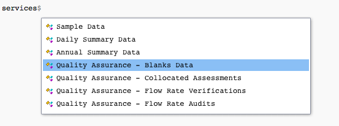

Making your first call
Source:vignettes/a05_making-your-first-call.Rmd
a05_making-your-first-call.RmdSee what services the API offers
Be sure to load the package before starting!
At the outset, we may not know exactly what we want from the API. We can start by taking a look at the services object included with the package. The services object is an R list that contains information about each service offered by the EPA API and how to use it.
If we just want to see a list of services offered, we can try
names(services)## [1] "MetaData"
## [2] "List"
## [3] "Monitors"
## [4] "Sample Data"
## [5] "Daily Summary Data"
## [6] "Annual Summary Data"
## [7] "Quality Assurance - Blanks Data"
## [8] "Quality Assurance - Collocated Assessments"
## [9] "Quality Assurance - Flow Rate Verifications"
## [10] "Quality Assurance - Flow Rate Audits"
## [11] "Quality Assurance - One Point Quality Control Raw Data"
## [12] "Quality Assurance - PEP Audits"If we want to see a description for a particular service, we may type its name and select it from services.
An example for the MetaData service is shown below.
services[["MetaData"]]$Description## [1] "Returns information about the API. Is it available/up? What are the meanings of the fields in my returned data?Recent and planned changes, etc."Using RStudio’s smart variable selection, simply typing services$ will open up a service to select along with any other useful information about that service.

Becoming familiar with the services object can help you to make calls. In the Navigating services page, we talk in depth about the services object.
A basic call
In this example, we will attempt to list all parameter codes associated with states in the US.
Setup
If you haven’t already read the Anatomy of an API request, we recommend you do. The post explains how a call is made and may help you in making your own calls.
Remember to set up your authentication first!
The package automatically includes the base of the call (the base API site and authentication). To query, we need to find the appropriate get function for our service, or manually provide an endpoint to perform.call() (to see how you can determine an endpoint see the Finding endpoints page).
Option 1: User friendly functions
To reduce the difficulty of finding the specific endpoint for your API call, there are a collection of specific get functions for each service and filter combination.
If we were trying to find state parameter codes, this will return all states and their respective FIPS codes.
result <- get_state_fips()The get function for each service will provide an R list with a Header and Data component. The Header contains information about the call and is useful for determining how the call went through.
result$Header$status
result$Header$request_timeTo get the actual data we called for (states and their parameter codes), we use the Data component of the result.
result$DataOption 2: Manually placing the call
If we want to make the call manually, we need to determine the appropriate endpoint for the type of query we wish to make.
Recall that we’re looking for all parameter codes associated with each state in the US.
We first look at services, and select List’s description to see if this is the appropriate service to use.
services$List$Description## [1] "Provides information you need to construct other queries. Valid values for the required variables: parameter code, state code, etc. (See below.)"This seems like the perfect service to use to find state parameter codes. We select List, and then see that there are multiple Filters available for listing.
It looks like States would be the most appropriate option here.
services$List$Filters$States## $Endpoint
## [1] "list/states"
##
## $RequiredVariables
## [1] "email, key"
##
## $OptionalVariables
## [1] ""
##
## $Example
## [1] "Returns a list of the states and their FIPS codes used for constructing other requests:https://aqs.epa.gov/data/api/list/states?email=test@aqs.api&key=test"This shows us the endpoint to use and required variables. Since the email and key are always included in calls, we need only get the endpoint to make the call.
endpoint <- services$List$Filters$States$EndpointAfter determining the endpoint, we can make the call using perform.call().
result <- perform.call(endpoint = endpoint)The perform.call() function will provide the same R list structure for output as each of the get functions.
Alternatively, if you want the original output from the API, perform.call.raw() will make a request, and provide the request results raw in JSON format.
raw.result <- perform.call.raw(endpoint = endpoint)